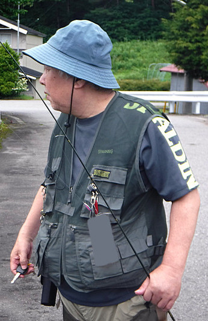
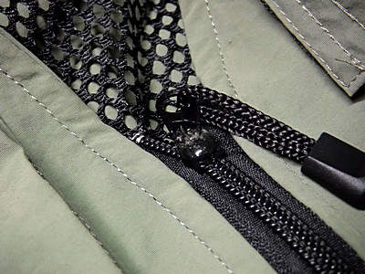
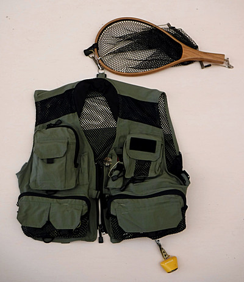
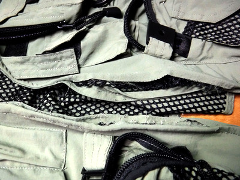

私のお気に入り
釣りの衣類 マックスキャッチ社 メッシュ・フィッシングベスト
長い話になりますが.....。
ことの起こりは、今年（2019）の夏、叔父といつもの高原にある里川にイワナ釣りに出かけたはいいのですが、あまりの暑さに加え、生地の厚いルアーベストの重さと通気性の悪さに参ってしまったことだった。
叔父の着ているメッシュベストが涼しそうだったので尋ねてみると、叔母との日曜ドライブの途中で立ち寄った安売り衣料品店で、2,000円ほどだったとのこと。

特に釣り用に作られた製品では無さそうだったが、叔父ほどの腕ならば、ダレかのようにベストに頓着しなくても問題無く釣れるのである。当たり前の話だが。（笑）
さて。
それでは僕も似たようなメッシュのフィッシングベストを買おうと、とりあえず条件を整理してみた。
- 色、目立たなくて、好きなダークグリーン
- 素材、丈夫なメッシュ地で、洗濯を繰り返しても縮まない化繊の製品
- 予算、2000円、これは譲れないし、それ以上はかけられない。高いベストを着ても、叔父ほど上手くなるとは思えない（笑）
- 容量、充分な収納力、たくさんのポケットがあること
- デザイン、背面に雨具が入る大型ポケットと、ネットリトリーバー用のDリングもしくはループが付いていること
- 耐久性、生地は薄くても丈夫であって欲しい。こればかりは買ってみて長く使わないとわからないが
それから数日間は、ネットの通販サイトを探しまくってみた。Amazon、価格コムなど。結果として、15点ほど候補に上がったが、商品ページを見るだけでは上記に挙げた条件を満たしているかは不明な点も多かった。特にランディングネット用のリング／ループの有無がよくわからない。
そんな中、コストパフォーマンスの良いフライリールなどを売っていて、ネットで評判のMaxCatch社のサイトを覗いて発見したのがこのメッシュフィッシングベスト「Fly Fishing Mesh Vest Hylite」であった。
この会社のフライフィッシングベストのラインナップで、一番安いベストだった（この時点では）。販売価格は$18.99、日本への配送料はなんと無料であった。
商品ページを見る限りでは、なかなか良さそうな製品であり、ほぼ条件を満たしているように思えた。しかし、通販の場合、実際に商品が届いて実物を見るまでは、いささか博打的な買い物になるのは避けられない。特に僕にとってこの中国の会社の製品を買うのは初めてのことだったので、一抹の不安は残った。買った時点での為替レートで換算すると、日本円で2,094円であった。
2049/09/05に発注した商品が、09/20に到着した。ココロ踊らせてパッケージを開封し、取り出したベストの身頃を開くメインのファスナーを開けようと引っ張ると、いきなりファスナーのツマミが外れてしまった。
「ゲゲ！ やはり、というかさすがは中国製.....」
返送・交換してもらおうとも考えたが.....メールでのやりとりや、返送手続きが面倒になるかもしれなかったし、壊れたファスナー以外は、なかなか良く出来ているようだったので、強引に多目的ボンドクリアで外れたツマミを接着して使うことにした。上下に可動するツマミが上向きに固定されてしまうがしょうがない。何せ、あと10日ほどで今シーズンのイワナ釣りは終わってしまうのだ。

次の夜、接着したファスナーが硬化して使えるようになったので、必要な道具を収納、取り付けてみた。ルアーケース３個、ランディングネット、クマ鈴、雨具、すべて収納できた。生地は薄いが丈夫そうであり、縫製はまずまず。色は上出来の、好みの暗緑色だった。

左右の主要ポケットにはファスナーの取っ手が２つ付いており、どちらから開けても便利になっている。ロッドホルダーもちゃんと付いているので、ルアーの交換時には両手が空いて楽に出来そうだった。
背面のポケットはさほど大きくないが、左右にファスナーがあり、両方から開けられる。身頃の左右にファスナーがあり、全開にするとかなりウェストの大きな、丸々と太った人でも着られそうだった。襟周りは薄いが一応ジャージが当てられている。
2019/09/22と28日の釣行で使ってみたところ、固定してしまったファスナーのツマミ以外は素晴らしい出来であった。
そして。
渓流釣りシーズンが終わって10月に入り、前面ファスナーの交換作業が始まった。近所の手芸用品店に、ベストの現物を持って、交換用のファスナーを買いに行った。あの YKK ブランドで、開くと左右が分離するタイプのファスナーをお店の綺麗な女性店員さんに選んでもらい、既存のファスナーと同じ大きさに調節加工してもらった。色は各色揃っていたが、ダークオリーブと迷った末に、オリジナルと同じ黒にした。さらに、壊れたファスナーを取り外す時には、リッパーという手芸用ツールがあると便利とのことだったので、言われるままにその道具も購入してしまった。合計 591円。（笑）
これでは安いベストを苦労して探し出した意味があまり無くなってしまったような気もしたが、かなりデザイン、生地、縫製、色などが良かったし、出来の悪い子供ほど可愛いそうなので、さほど後悔はしなかった。
家に帰り、リッパーでコチョコチョと縫い目の糸をカットして、既存の壊れたファスナーを取り外した。裏面では、勢い余って余分な縫い目まで外してしまった。

久しぶりに叔母と四方山話をしながら、新しいファスナーの縫い付け作業をしてもらう。まずは手縫いで仮止めをして、ちゃんとファスナーの開閉ができるか確かめることになった。ファスナー基部の生地が厚く、なかなか手縫い針が通りにくく、思ったよりも時間がかかった。もう焦ることはないので、ミシンでの本縫いはまた叔母さんの暇がある時にやってもらうことにして、その日曜日は帰宅した。
今年74歳になる叔母は、今でもホームヘルパーの仕事で週に３～４日ほど出かけており、忙しかったので完成までに３週間ほど要したが、一報を受けて取りに行くと、見事にファスナー交換が終わり、きちんと縫い付けられていた。
その晩、ウェブサイトを見てみると、僕の買ったベストはラインナップから消えていた。おそらくは在庫処分品だったために、あの安さだったのかもしれない。
しかし、仮に、このベストに国内外のフライフィッシング有名ブランドのタグ・ラベルが付けば,5,000円以上の値段で売られると思うし、その値段でも買う人は確実に存在するだろう。
良い買い物が出来た。来シーズンが楽しみである。
追記：今日、再びMaxCatch社のウェブサイトを見てみると、僕の買ったベストがラインナップに復帰していた。価格は、定価：$43.70 、販売価格が $29.99 となっていた。そして、この買い物が、僕がそれ以降 MaxCatch社の製品を立て続けに購入してしまう火付け役になってしまったのである。（笑）
画像はメーカーウェブサイトより引用
私のお気に入り 目次へ
サイトマップ
ホームへ
お問い合わせ